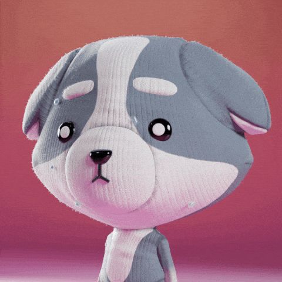
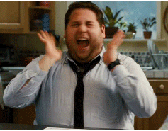
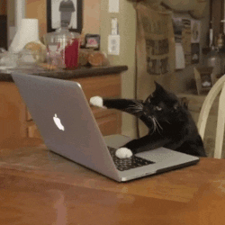
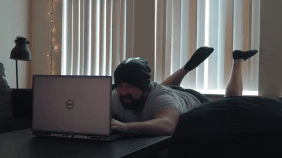
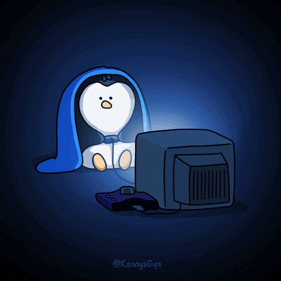

Это было самое начало пути. На этом этапе важно было проникнуться основами и
настроиться на учёбу. И, возможно, подумать, как новые знания могут повлиять на ваше будущее.
В начале учёбы мне было волнительно, но вместе с тем хотелось поскорее окунуться в
изучение новой профессии. После записи на курсы я не мог дождаться, когда наконец откроется доступ к первому
спринту.
1 спринт: Я — чистый лист
</Волнение>

На первых этапах мы работали со страхами и сомнениями, которые часто испытывают
новички. Один из них — страх перед чистым листом. Это, конечно же, намного сложнее, чем боязнь куска бумаги.
Часто за этим ощущением скрываются более глубокие вопросы: с чего начать? а вдруг будет слишком сложно? что,
если я не справлюсь?
Во время первого спринта я узнал много новой информации. Её было настолько много, что в
голове возникла путаница и появился страх перед первой проектной работой.
1 спринт: А если не получится?
</Радость>

Первый проект — позади! Но это всё ещё самое начало пути. Радость могла быстро
померкнуть и смениться ожиданием провала. Или вы, наоборот, могли вдохновиться успехами и поверить в себя.
После того как мою проектную работу приняли, меня стали переполнять чувства радости и
появилась мотивация поскорее начать второй спринт.
2 спринт: Погоня за идеалом
</Сосредоточенность>

На этом этапе вы уже достаточно разбирались в основах вёрстки, чтобы понять, как много
ещё впереди. Вы могли попытаться погнаться за идеалом и понять, что он недостижим. А, может, вы вовсе и не
подвержены перфекционизму и вместо того, чтобы сделать идеально, старались просто сделать.
Второй спринт протекал для меня более гладко. Часть тревоги отсеялась, и я просто шёл
равномерными шагами к проектной работе, чтобы проверить свои знания на прочность.
2 спринт: О тех, кто рядом
</Поддержка>
Всё это время вы были не одиноки (хотя, возможно, иногда и чувствовали, что одни против
целого мира). Вас окружали одногруппники, команда сопровождения и просто близкие люди, которым можно
пожаловаться, если очередной макет просто так не поддавался. Осваивать что-то новое легче, когда рядом есть
единомышленники, не правда ли?
О своих успехах и неудачах я рассказывал другу. Возможность выговориться другому
человеку неплохо добавляла мне сил в трудные часы.
3 спринт: Обходные стратегии
</Лень>

На этом курсе вы постоянно решали разные задачи. В какой-то момент вам могло
показаться, что решения просто иссякли. Значит, пришло время посмотреть на задачу под другим углом.
Третий спринт показался мне одним из самых сложных. Сама по себе новая информация
трудностей не вызывала, но её количество заметно увеличилось.
3 спринт: Когда опускаются руки
</Усталость>

Во время учёбы часто возникает чувство, когда не знаешь, за что хвататься. Вроде и
проектную пора сдавать, и задачи хочется порешать, и в теории получше разобраться, и жизнь не забыть пожить. В
такие моменты очень нужна концентрация. Вспомните, откуда вы её черпали.
Во время третьего спринта мотивация, которая была со мной на первых двух, стала
потихоньку улетучиваться. Были моменты, когда не хотелось ничего делать. Собственно, я ничего и не делал: брал
себе полноценный выходной, в который отдыхал от учёбы, работы и домашних дел. Этот день я тратил на общение с
друзьями, компьютерные игры, вечеринки. После такой разгрузки приходило чувство расслабления - и мотивация
возвращалась.
«Сейчас я здесь»
</Уверенность в себе>
Сейчас вы уже очень много знаете о вёрстке. Но это только начало. Во-первых, впереди
ещё много материала про «красотищу». Во-вторых, с окончанием курса учёба не заканчивается. Вёрстка — это целый
мир. И этот мир постоянно меняется. Познать его полностью не получится, но это тот случай, когда важен сам
процесс познания. Ведь часто путь — и есть результат.
Оглядываясь на то время, когда я только начинал обучение на курсе, появилось ощущение,
что действительно много знаю. Возможно, эти знания местами не структурированы, но даже по окончании модуля по
вёрстке у меня сохранилась мотивация тренироваться и углубляться в этом направлении. 😎